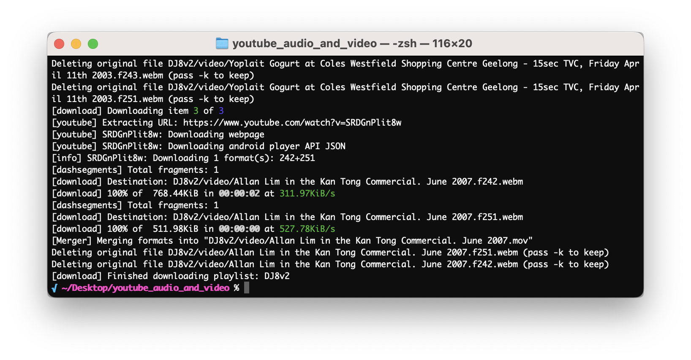

Automate YouTube Playlist Downloads with yt-dlp for DJ Work
Hey all, to improve my workflow when playing around with DJ ideas, I download audio and video files from multiple YouTube playlists to use in my work. I've created a simple script to automate this process on your Mac. It will create separate folders for each playlist and download the files in the appropriate formats. Please note that the YouTube playlists must be set as either public or unlisted for this script to work.

Before we start, let's talk a little about Terminal. Terminal is a command-line interface on macOS that allows you to interact with your computer using text commands. We will use Terminal to install some tools and run the script.
First, we need to install some tools (note some of these may take like 5-10 minutes or more, so once it starts running just leave it in the background and wait):
- Homebrew : A package manager for macOS. You can install it by pasting the following command into your Terminal and hitting Enter (you may need to enter your password (hint: when entering your password it won't show the amount of letters you type, but don't worry - just hit enter when done and it will work)):
/bin/bash -c "$(curl -fsSL https://raw.githubusercontent.com/Homebrew/install/HEAD/install.sh)"- yt-dlp : A command-line program to download videos from YouTube and other sites. You can install it with Homebrew:
brew install yt-dlp- FFmpeg : A powerful tool to process multimedia files. You can install it with Homebrew as well:
brew install ffmpegNow, let's create a folder on your desktop called youtube_downloads and navigate into it:
mkdir -p ~/Desktop/youtube_downloads
cd ~/Desktop/youtube_downloads(mkdir stands for 'make directory' and cd stands for 'change directory')
Next, create a new file called download_playlists.sh in the youtube_downloads folder:
touch download_playlists.sh(touch creates a new file)
Open the download_playlists.sh file with your favorite text editor and paste the following script, replace the youtube playlist URLs with your own youtube playlists:
#!/bin/bash
# Define a list of playlist URLs
playlist_urls=(
"https://www.youtube.com/playlist?list=PLcduW1K6eOtn8mIAArqAjonxvYviQ6ZAa"
"https://www.youtube.com/playlist?list=PLcduW1K6eOtluf6V9mlTqYlxE8pdI8TSe"
)
# Loop through each playlist URL
for playlist_url in "${playlist_urls[@]}"; do
# Get the playlist title
playlist_title=$(yt-dlp -J --yes-playlist "$playlist_url" | python3 -c "import sys, json; print(json.load(sys.stdin)['title'])")
# Replace characters that are not allowed in folder names
safe_playlist_title=$(echo "$playlist_title" | tr '/\\:*?"<>|' '_')
# Create subfolders for audio and video inside their respective top-level folders if they don't exist
if [ ! -d "audio/${safe_playlist_title}" ]; then
mkdir -p "audio/${safe_playlist_title}"
fi
if [ ! -d "video/${safe_playlist_title}" ]; then
mkdir -p "video/${safe_playlist_title}"
fi
# Download video files (with max 1080p quality, .mov format, and H.264 video codec and AAC audio codec)
yt-dlp --ignore-errors --no-warnings --format "bestvideo[height<=1080]+bestaudio" --merge-output-format mov --output "video/${safe_playlist_title}/%(title)s.%(ext)s" --yes-playlist "$playlist_url" --download-archive "video/${safe_playlist_title}/downloaded_${safe_playlist_title}_video.txt" --postprocessor "FFmpegVideoConvertor" --postprocessor-args "-c:v libx264 -c:a aac"
# Download audio files
yt-dlp --ignore-errors --no-warnings --format bestaudio --extract-audio --audio-format mp3 --audio-quality 160K --output "audio/${safe_playlist_title}/%(title)s.%(ext)s" --yes-playlist "$playlist_url" --download-archive "audio/${safe_playlist_title}/downloaded_${safe_playlist_title}_audio.txt"
doneSave the file and close the text editor. To access the script, open Terminal and navigate to the youtube_downloads folder:
cd ~/Desktop/youtube_downloadsMake the script executable by typing the following command in Terminal:
chmod +x download_playlists.sh(chmod changes file permissions
)
Now, you can run the script by typing:
./download_playlists.shThe script will loop through each playlist URL and download the audio and video files. It first gets the playlist title and creates a "safe" version of it by replacing characters that are not allowed in folder names. Then, it creates separate folders for audio and video files if they don't already exist.
Next, the script downloads the audio files as MP3s with a quality of 160Kbps. It saves them in the "audio" subfolder and keeps a record of downloaded files in a text file. Similarly, it downloads video files with a maximum quality of 1080p, saves them as .mov files with H.264 video codec and AAC audio codec, and stores them in the "video" subfolder. It also keeps a record of downloaded video files in a separate text file.
To add more playlists to the script, simply edit the download_playlists.sh file and add more playlist URLs to the playlist_urls array, following the same format as the existing URLs.
Oh and last thing, to re-run the script quickly, if you have put the folder on your desktop as I suggested - just open a terminal and run
./Desktop/youtube_downloads/download_playlists.shI hope this script helps you quickly download audio and video files from YouTube playlists for your DJ work!